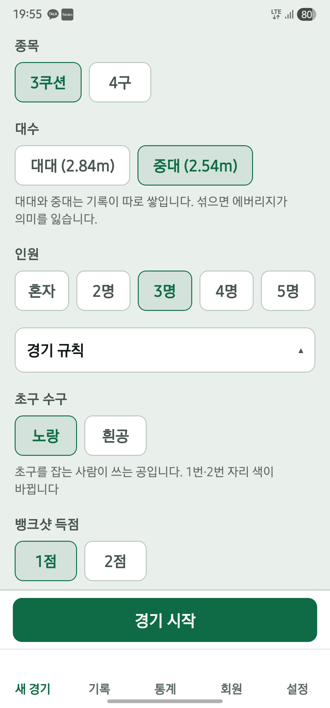

당구장에서는 복잡한 준비보다 첫 공이 먼저죠. 에버보드는 종목과 선수, 경기 규칙을 정하면 바로 점수판을 사용할 수 있습니다.
STEP 01
새 경기에서 오늘의 조합을 정하세요.
- 종목과 대수 선택
3쿠션 또는 4구(사구)를 선택하고, 대대·중대를 맞춥니다. 통계가 따로 쌓이므로 실제로 치는 테이블에 맞춰 주세요.
- 인원과 선수 선택
혼자 연습, 2~5인 개인전 또는 2:2 복식을 설정합니다. 등록한 회원을 선택하거나 이름을 입력하고 목표점을 정하세요.
- 경기 규칙 확인
초구 수구, 뱅크샷 점수, 이닝 제한 등 함께 치기로 한 규칙을 확인한 뒤 경기 시작을 누릅니다.

STEP 02
득점을 기록하고, 내 차례가 끝나면 턴 넘기기.

득점은 + 버튼으로
현재 선수의 점수를 올립니다. 큰 점수 영역을 눌러서도 득점을 입력할 수 있습니다.
차례가 끝나면 턴 넘기기
미스 등으로 내 차례가 끝났을 때 누릅니다. 다음 선수로 넘어가며 이닝이 기록됩니다.
실수했다면 되돌리기
잘못 입력한 동작은 되돌리기를 사용해 바로잡으세요. 점수와 이닝을 확인하고 경기를 이어갑니다.
STEP 03
경기가 끝나면, 결과가 내 기록이 됩니다.
득점·이닝·에버리지·하이런과 이닝별 득점 격자를 확인하세요. 같은 조합으로 다음 경기를 시작하거나, 기록 보기에서 한 판을 다시 살펴볼 수 있습니다.
경기를 중간에 마무리해야 할 때는 나가기 메뉴에서 원하는 종료 방식을 확인하세요. 진행 중인 경기를 나중에 이어할 수도 있습니다.
에버리지와 경기 기록 읽는 법내 당구장에 맞는 설정
설정에서 음성 안내, 효과음, 진동과 화면 켜짐 유지를 조절할 수 있습니다. 조용한 곳에서는 소리를 끄고, 점수판을 멀리 두는 상황에서는 음성 안내를 활용해 보세요.
백업 방법 확인하기